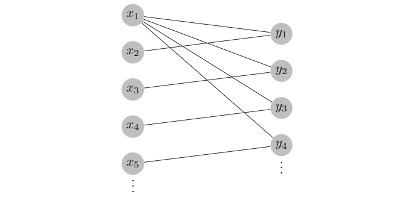

Research Interests
Spanning Trees
A common question in graph theory is to ask how many copies of one type of graph can appear within another. For my senior project, I researched disjoint spanning tree packings in almost balanced bipartite graphs.
→

Computer Graphics
I am interested in computer graphics as a future research topic. Specifically, I'm interested in both ray tracing and physics simulation. While I have not yet completed formal research on either topic, I have experience working on a ray tracer and a physics engine. See my projects page for more details!
→